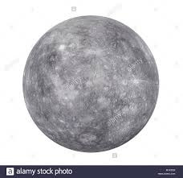
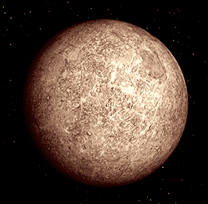

Facts about Mecury
Mecury is the closest Planet to the sun and the smallest planet in our solar system it travels around the sun faster than any other planet in our solar system , mecury orbits the sun every 88 days and its axis is locked on that course which every seven years in can be seen from earth.
Mecury's Origin comes from greek methology which is the god of commerse and in Roman methology he is known as hermes the messanger god. Mecury's Temperture is -173 degrees C and at night its 427 degrees C.
 